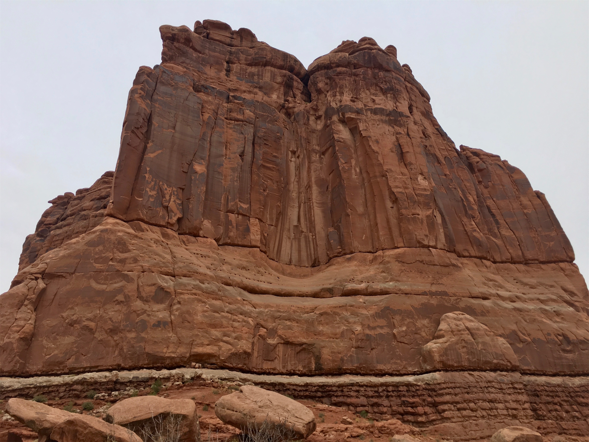
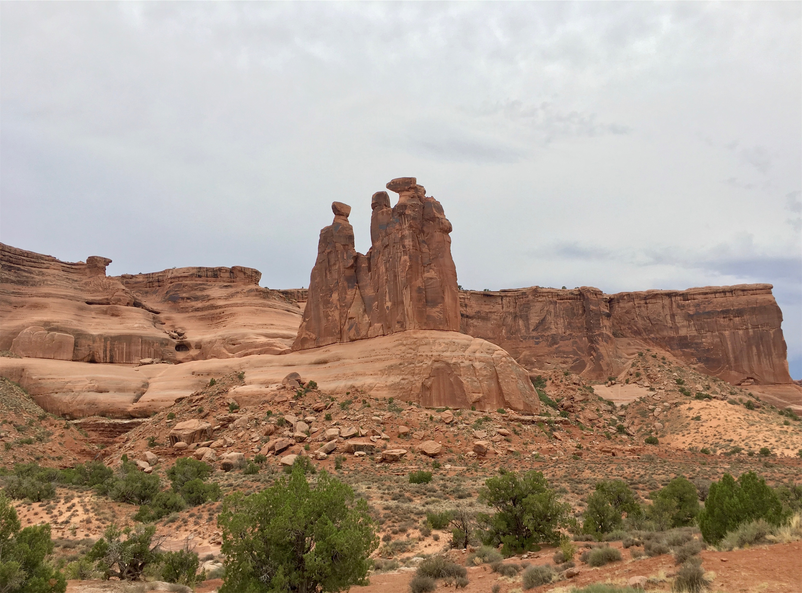
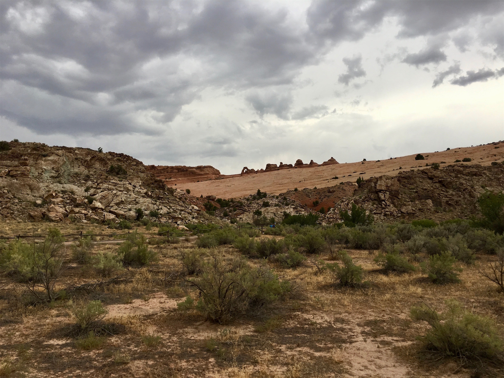
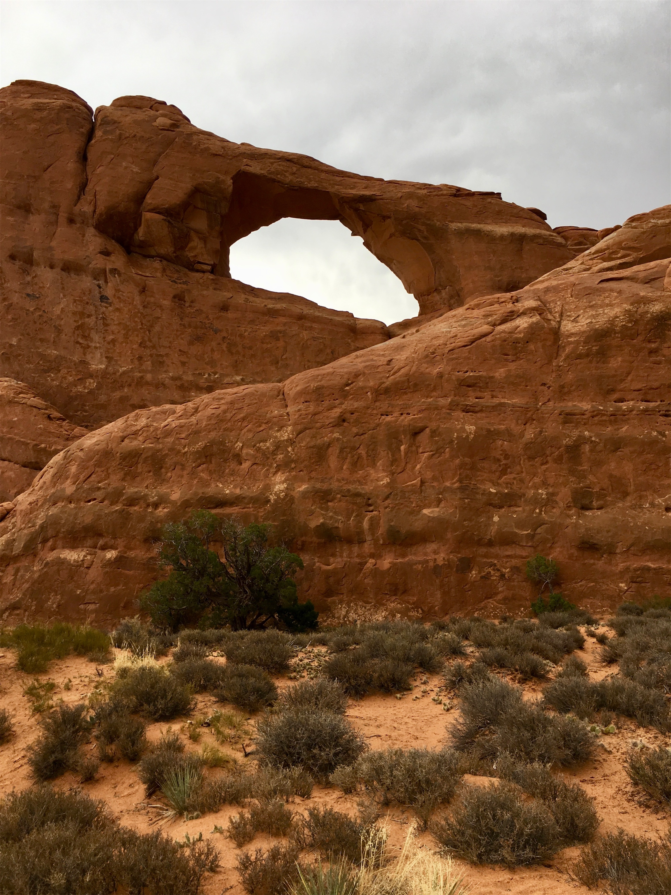
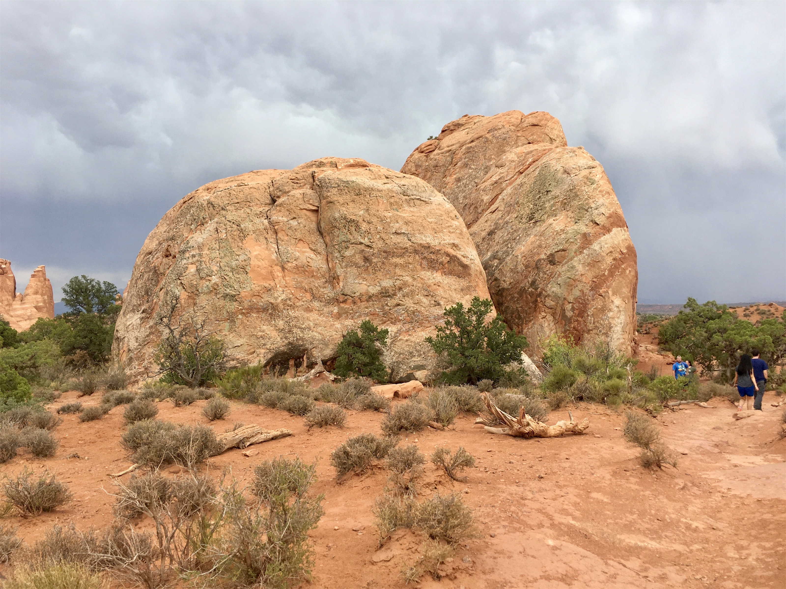
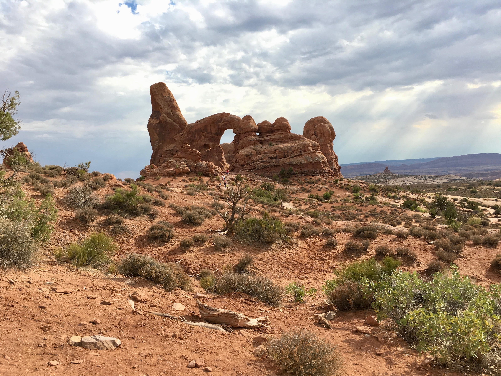
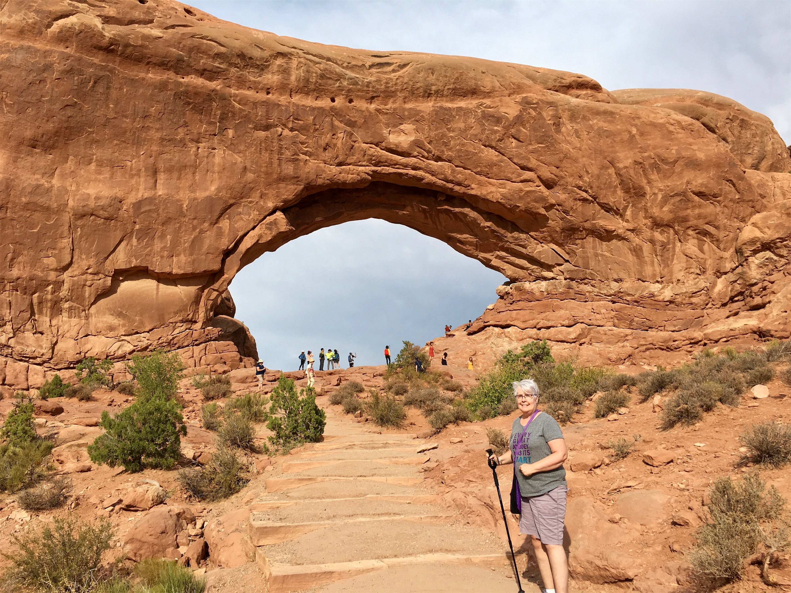
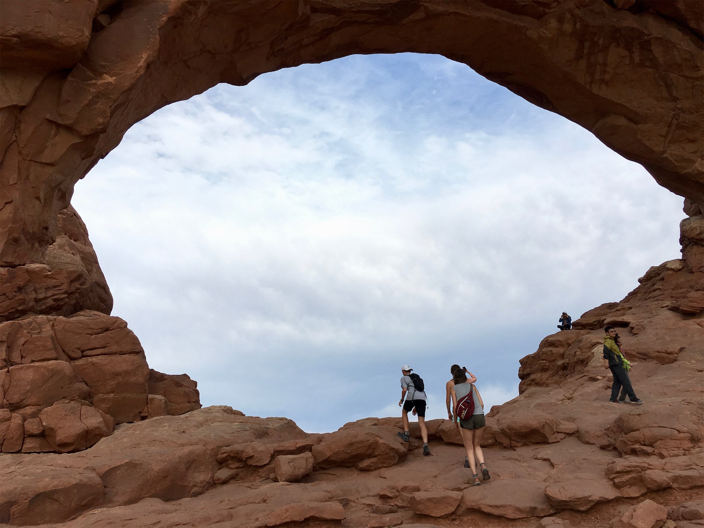
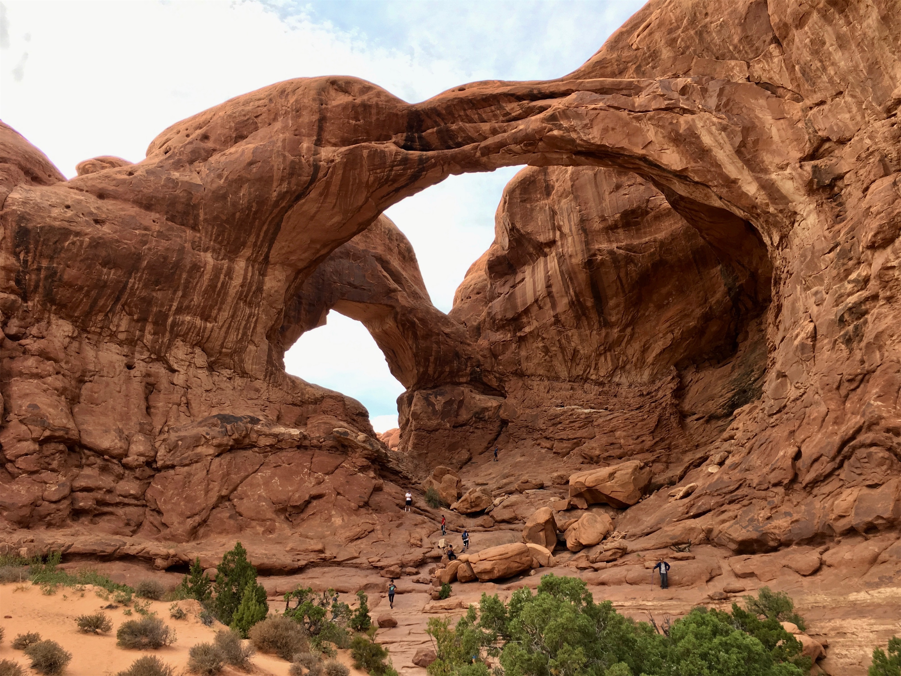
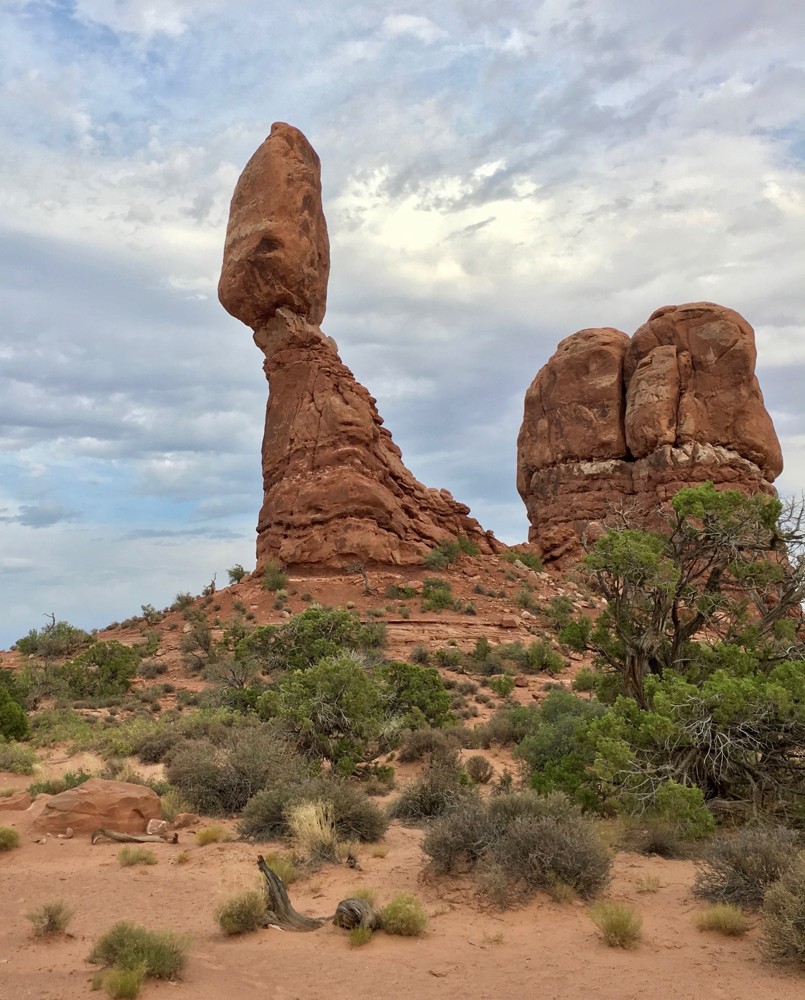

Saturday, Jul 28, 2018, 2:24 PM MDT
Arches National Park Visitor Center, Thompson, UT, United States
97°F Sunny
97°F Sunny
![]()
7/28 Torrey, UT -> Arches Visitor Center, UT 160 mi, 3.25 hr
7/28 Arches Visitor Center, UT -> Park Roads (RT) 48 mi, 4.5 hr
7/28 Arches Visitor Center, UT -> Moab, UT 5 mi, 1 hr
Trip Toal: 9,600 mi
As we headed east, the multi-colored rock formations turned to monochromatic areas of grays and browns as we continued through the desert sagebrush along the Fremont River. Eventually, we caught a piece of I-70, and then headed south to Moab, our home base for an Arches visit today and a Canyonlands visit tomorrow.
Arches is notorious for large crowds in a small space, with the wait times to enter exceeding an hour and the lines extending to the highway. And, it was in the high 90s. So, we decided to arrive in mid-afternoon, and were rewarded with no wait time to enter. Arches is famous for (surprise) its stone arches. There are about 2,000 of them in the park! We made our way up the winding road, seeing impressive salmon-colored rock formations, and came across the 3,600 ton, 55 ft tall (128 ft overall) Balanced Rock, which looks like it is about to fall over at any moment. We did the 0.3 mile walk around this impressive sight. We continued driving, waiting for a glimpse of our first arch, and headed to the Lower Delicate Arch Overlook, and barely saw it in the distance.
There was a thunderstorm coming, so Brad tried to hike to the Upper Delicate Arch Overlook, but partway up, the winds turned violent and sandblasted everything (including some of the bug splatter off the car) and lightning started, so he ran back to the car and we decided to wait out the storm. Then, an agitated woman from China and her son ran to our car for shelter, and explained that they were separated from their relatives and their car and asked for a ride to another parking lot. We decided to continue on our journey to see an arch wondering why, with 2,000 in the park, we really weren’t seeing any up close.
Our luck changed with Skyline Arch, and in a little sprinkle and nice post-storm temperature in the low 80s, we did the 0.4 mi hike right up to the base of it. On the drive back, we stopped at North Window Arch, and did that 1.0 mi hike, which had a pretty steep incline, and were rewarded with a great valley view through the window at the top. We also saw the amazing Double Arch, with a 0.5 mile hike. Finally, we had our fill of arches, and headed to Moab.









